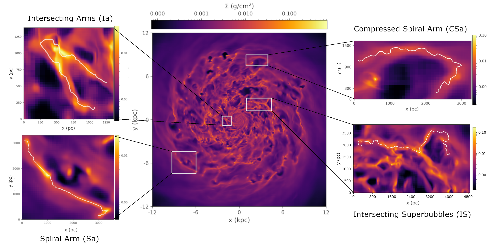
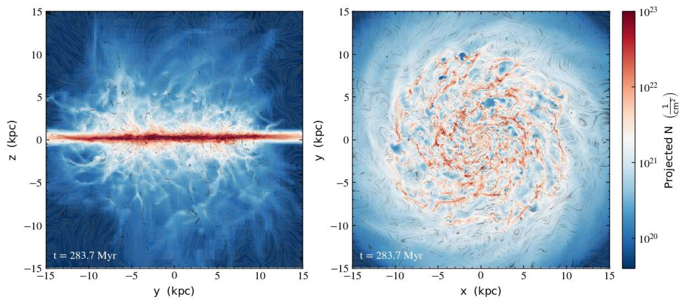
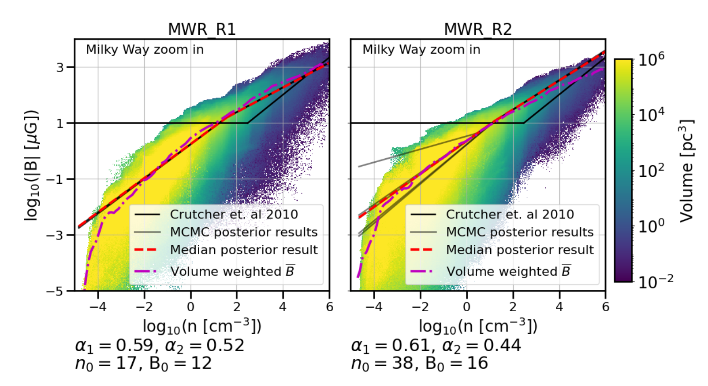

ADS link arXiv link
Filamentary Hierarchies and Superbubbles I: Characterizing filament properties across a simulated spiral galaxy
Rachel Pillsworth, Erica Roscoe, Ralph E. Pudrits & Eric W. Koch

ADS link arXiv link
Filamentary Hierarchies and Superbubbles: Galactic Multiscale MHD Simulations of GMC to Star Cluster Formation
Bo Zhao, Ralph E. Pudritz, Rachel Pillsworth, Hector Robinson, James Wadsley

ADS link arXiv link